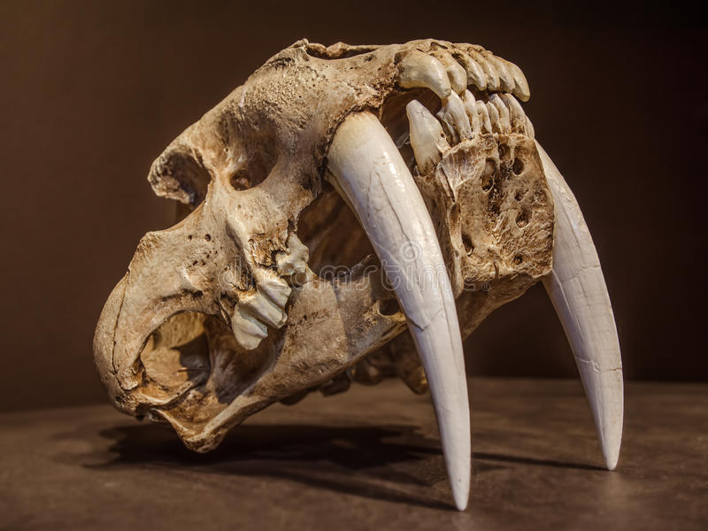
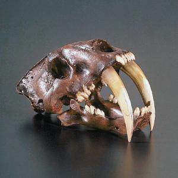
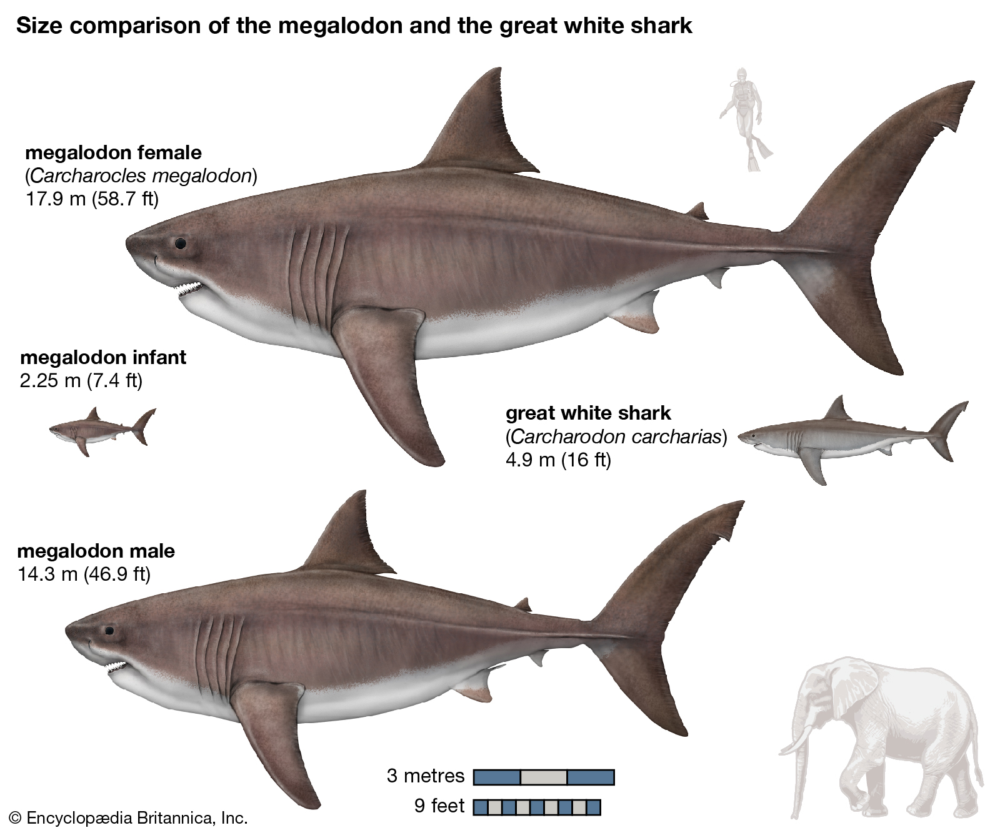

Sabre tooth tigers went extinct about 10,000 years ago
They could be found in North America and Europe, however by Pliocene times, they had spread to Asia and Africa
About Sabre Tooth Tigers
The most widely known genus of sabre-toothed cats is Smilodon, also called the “sabre-toothed tiger.” They are are characterized by long, curved saber-shaped canine teeth which protruded from the mouth when closed.
"Several physical adaptations of Smilodon suggest such a hunting technique: its skull was modified to accommodate the attachment of strong neck muscles for bringing the head down; the lower canines were reduced; and the molars formed shearing blades with no trace of grinding surfaces. In addition, the jaw could be opened to about a 90° angle to free the upper canines for action; however, some paleontologists suggest that since the muscles in the jaw would have had to stretch significantly to enable such a wide gape, they would have been relatively weak compared with those of modern cats."

Sabre tooth tiger fossil: Its upper canine teeth were around 8 inches long.

Megalodon
Time period and Geography
The megalodon became extinct around 2.6 million years ago due to climate change and changing ecosystem
"Found in shallow tropical and temperate seas along the coastlines and continental shelf regions of all continents except Antarctica."
About Megalodons:
It is an extinct species of mackerel shark and it got the name "megalodon" because it means “big tooth” in ancient greek
It measured up to 60 feet long, making it one of the biggest predators to ever live

The size differnce bewteeen a megalodon and other sharks